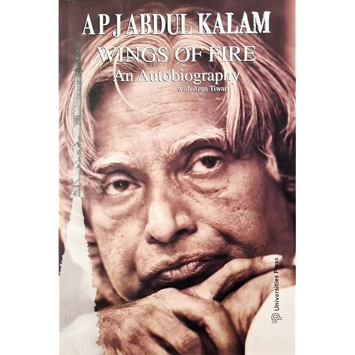

Books
Publications by Dr. A.P.J. Abdul Kalam
Dr. Kalam was an author and thought leader, penning several inspirational books that continue to motivate readers worldwide. His notable works include:
"Wings of Fire" (1999): An autobiography that recounts his journey from a small-town boy to a leading scientist.
"Ignited Minds" (2002): A motivational book dedicated to the youth of India, emphasizing their role in shaping the nation's future.
"India 2020" (1998): A visionary blueprint for India's development and progress.
"My Journey" (2013): A collection of anecdotes from his personal and professional life.
"Turning Points" (2012): Chronicles his journey as India's President and the pivotal moments in his career.
His writings reflect his belief in innovation, education, and a brighter future for all.
